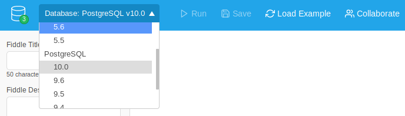
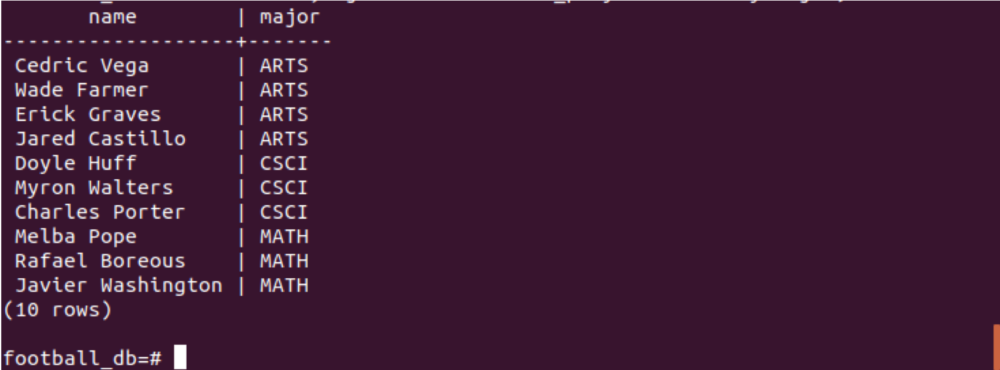
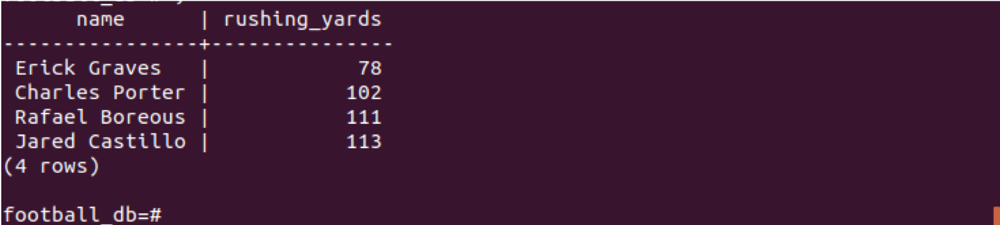
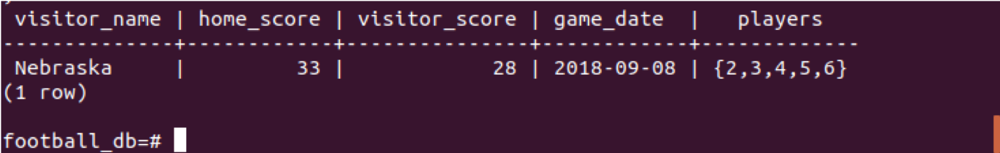
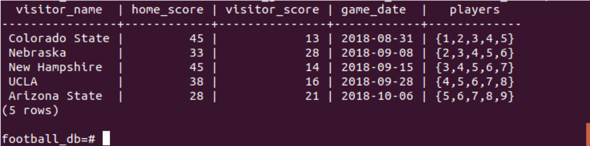
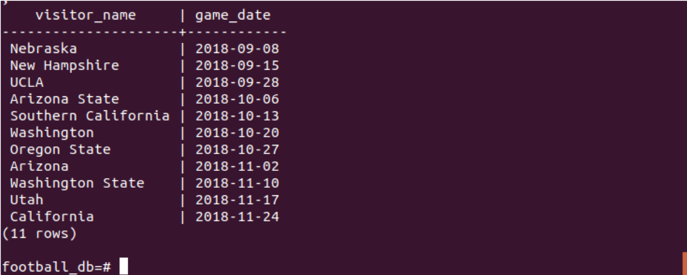
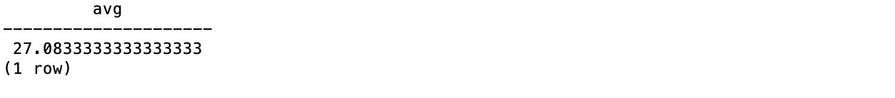
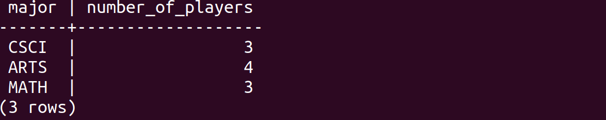
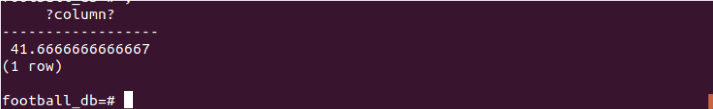
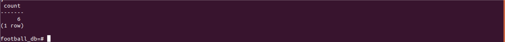

Lab 6 PostgreSQL
This lab won't require any html or website code. Instead we will focus on working with PostgreSQL to create a database for our football data. To receive credit for this lab, you MUST complete steps 1 through 6 in recitation and get marked off by your TA. You MUST complete step 7 (either in recitation or on your own) and upload "lab_6_link.txt" to Canvas by the deadline. You may work with a partner. If you do, make sure to include your partners name at the top of "lab_6_script_answers.txt". Note: This lab is due on October 18, 11:59 p.m.
| Est. Time ⏱ |
|---|
| 0 minutes |
1. Tutorial
(20 Minutes)
You can find a more detailed explanation of Joins for PostgreSQL here . This is also the source for the handy diagram below:
-

2. PostgreSQL Setup in Linux
(10 Minutes)
- 1. Switch to the postgres user account
-
During the installation process PostgreSQL created a new user account named postgres. You'll be using this user account for most of your database interactions.
sudo -u postgres psql - 2. Create a database for our football website
-
create database football_db; - 3. Enter the football database
-
\c football_db; - 4. Create football_player & football_games Tables
- Copy the following code into psql terminal to create the football_player & footbal_games table and populate them with data. If you are having problems with your PostgreSQL installation, insert the code instead into the DB Fiddle IDE to work through the lab exercises.
CREATE TABLE IF NOT EXISTS football_games ( visitor_name VARCHAR(30), /* Name of the visiting team */ home_score SMALLINT NOT NULL, /* Final score of the game for the Buffs */ visitor_score SMALLINT NOT NULL,/* Final score of the game for the visiting team */ game_date DATE NOT NULL, /* Date of the game */ players INT[] NOT NULL, /* This array consists of the football player ids (basically a foreign key to the football_player.id) */ PRIMARY KEY(visitor_name, game_date) /* A game's unique primary key consists of the visitor_name & the game date (this assumes you can't have multiple games against the same team in a single day) */ ); CREATE TABLE IF NOT EXISTS football_players( id SERIAL PRIMARY KEY, /* Unique identifier for each player (it's possible multiple players have the same name/similiar information) */ name VARCHAR(50) NOT NULL, /* The player's first & last name */ year VARCHAR(3), /* FSH - Freshman, SPH - Sophomore, JNR - Junior, SNR - Senior */ major VARCHAR(4), /* The unique 4 character code used by CU Boulder to identify student majors (ex. CSCI, ATLS) */ passing_yards SMALLINT, /* The number of passing yards in the players entire football career */ rushing_yards SMALLINT, /* The number of rushing yards in the players entire football career */ receiving_yards SMALLINT, /* The number of receiving yards in the players entire football career*/ img_src VARCHAR(200) /* This is a file path (absolute or relative), that locates the player's profile image */ ); INSERT INTO football_games(visitor_name, home_score, visitor_score, game_date, players) VALUES('Colorado State', 45, 13, '20180831', ARRAY [1,2,3,4,5]), ('Nebraska', 33, 28, '20180908', ARRAY [2,3,4,5,6]), ('New Hampshire', 45, 14, '20180915', ARRAY [3,4,5,6,7]), ('UCLA', 38, 16, '20180928', ARRAY [4,5,6,7,8]), ('Arizona State', 28, 21, '20181006', ARRAY [5,6,7,8,9]), ('Southern California', 20, 31, '20181013', ARRAY [6,7,8,9,10]), ('Washington', 13, 27, '20181020', ARRAY [7,8,9,10,1]), ('Oregon State', 34, 41, '20181027', ARRAY [8,9,10,1,2]), ('Arizona', 34, 42, '20181102', ARRAY [9,10,1,2,3]), ('Washington State', 7, 31, '20181110', ARRAY [10,1,2,3,4]), ('Utah', 7, 30, '20181117', ARRAY [1,2,3,4,5]), ('California', 21, 33, '20181124', ARRAY [2,3,4,5,6]) ; INSERT INTO football_players(name, year, major, passing_yards, rushing_yards, receiving_yards) VALUES('Cedric Vega', 'FSH', 'ARTS', 15, 25, 33), ('Myron Walters', 'SPH', 'CSCI', 32, 43, 52), ('Javier Washington', 'JNR', 'MATH', 1, 61, 45), ('Wade Farmer', 'SNR', 'ARTS', 14, 55, 12), ('Doyle Huff', 'FSH', 'CSCI', 23, 44, 92), ('Melba Pope', 'SPH', 'MATH', 13, 22, 45), ('Erick Graves', 'JNR', 'ARTS', 45, 78, 98 ), ('Charles Porter', 'SNR', 'CSCI', 92, 102, 125), ('Rafael Boreous', 'JNR', 'MATH', 102, 111, 105), ('Jared Castillo', 'SNR', 'ARTS', 112, 113, 114);
3. Using DB Fiddle
(5 Minutes)
Only Use DB Fiddle as a Last Resort!
Today's lab focuses on creating a database for our football website using PostgreSQL. Next week we will look at connecting this database to our website using Node.js, which means you will need to have a PostgreSQL database to work with next week. Since some students may have still be having issues getting their VM up and running or still can't get PostgreSQL working we have a temporary backup option of DB Fiddle (Click the Toggle in bottom right corner menu). You can use DB Fiddle to load a temporary PostgreSQL database and test your database scripts. Please note, you should be saving your work outside of DB Fiddle! So as you solve each Lab Question, write your answer down in a text file.
- 1. Click the DB Fiddle Button
- The modal containing DB Fiddle will pop-up for easy access. If you would like you can also open the DB Fiddle site in seperate browser/tab www.db-fiddle.com.
- 2. Set your Database Langauge as PostgreSQL 10
- 
- 3. Place the table creation & insertion scripts in the left ide pane (Schema SQL)
- Copy the following code into Schema SQL pane to create the football_player & footbal_games table and populate them with data.
CREATE TABLE IF NOT EXISTS football_games ( visitor_name VARCHAR(30), /* Name of the visiting team */ home_score SMALLINT NOT NULL, /* Final score of the game for the Buffs */ visitor_score SMALLINT NOT NULL,/* Final score of the game for the visiting team */ game_date DATE NOT NULL, /* Date of the game */ players INT[] NOT NULL, /* This array consists of the football player ids (basically a foreign key to the football_player.id) */ PRIMARY KEY(visitor_name, game_date) /* A game's unique primary key consists of the visitor_name & the game date (this assumes you can't have multiple games against the same team in a single day) */ ); CREATE TABLE IF NOT EXISTS football_players( id SERIAL PRIMARY KEY, /* Unique identifier for each player (it's possible multiple players have the same name/similiar information) */ name VARCHAR(50) NOT NULL, /* The player's first & last name */ year VARCHAR(3), /* FSH - Freshman, SPH - Sophomore, JNR - Junior, SNR - Senior */ major VARCHAR(4), /* The unique 4 character code used by CU Boulder to identify student majors (ex. CSCI, ATLS) */ passing_yards SMALLINT, /* The number of passing yards in the players entire football career */ rushing_yards SMALLINT, /* The number of rushing yards in the players entire football career */ receiving_yards SMALLINT, /* The number of receiving yards in the players entire football career*/ img_src VARCHAR(200) /* This is a file path (absolute or relative), that locates the player's profile image */ ); INSERT INTO football_games(visitor_name, home_score, visitor_score, game_date, players) VALUES('Colorado State', 45, 13, '20180831', ARRAY [1,2,3,4,5]), ('Nebraska', 33, 28, '20180908', ARRAY [2,3,4,5,6]), ('New Hampshire', 45, 14, '20180915', ARRAY [3,4,5,6,7]), ('UCLA', 38, 16, '20180928', ARRAY [4,5,6,7,8]), ('Arizona State', 28, 21, '20181006', ARRAY [5,6,7,8,9]), ('Southern California', 20, 31, '20181013', ARRAY [6,7,8,9,10]), ('Washington', 13, 27, '20181020', ARRAY [7,8,9,10,1]), ('Oregon State', 34, 41, '20181027', ARRAY [8,9,10,1,2]), ('Arizona', 34, 42, '20181102', ARRAY [9,10,1,2,3]), ('Washington State', 7, 31, '20181110', ARRAY [10,1,2,3,4]), ('Utah', 7, 30, '20181117', ARRAY [1,2,3,4,5]), ('California', 21, 33, '20181124', ARRAY [2,3,4,5,6]) ; INSERT INTO football_players(name, year, major, passing_yards, rushing_yards, receiving_yards) VALUES('Cedric Vega', 'FSH', 'ARTS', 15, 25, 33), ('Myron Walters', 'SPH', 'CSCI', 32, 43, 52), ('Javier Washington', 'JNR', 'MATH', 1, 61, 45), ('Wade Farmer', 'SNR', 'ARTS', 14, 55, 12), ('Doyle Huff', 'FSH', 'CSCI', 23, 44, 92), ('Melba Pope', 'SPH', 'MATH', 13, 22, 45), ('Erick Graves', 'JNR', 'ARTS', 45, 78, 98 ), ('Charles Porter', 'SNR', 'CSCI', 92, 102, 125), ('Rafael Boreous', 'JNR', 'MATH', 102, 111, 105), ('Jared Castillo', 'SNR', 'ARTS', 112, 113, 114);
4. Creating Tables & Inserting Data
(10 Minutes)
To Do
-
Write an SQL Script to create a new table to hold information on the competing universities.
The table should hold the following information:
University Name (Text) (Note: University Name should be unique and set as PRIMARY KEY)
Date Established (Date)
Address (Address)
Student Population (Int)
Acceptance Rate (Decimal)
-
Write an insert statement to add the University Information
The table should hold the following information:
University Name :- CU Boulder
Date Established :- 1876
Address :- 1100 28th St, Boulder, CO 80303
Student Population :- 35,000
Acceptance Rate :- 80%
5. Query Basics
(30 Minutes)
To Do
-
Write a script to list the Football Players (name & major), organized by major in college.
Output:
 -
Write a script to list all of the Football Players (name & rushing yards) who have 70 or more rushing yards.
Output:
 -
Write a script to list all of the games played against Nebraska (show all game information).
Output:

-
Write a script to list all of the games CU Boulder has won.
Output:

-
Write a script to list all of the games played in the Fall 2018 Season (show team name & game date).
Output:

-
Write a script to list the average number of points CU has scored in past games.
Output:

-
Write a script to list the majors of the Football players and calculate how many of them are in each of the majors listed. Rename the column where you calculate the majors to number_of_players.
Output:

-
Write a script to modify the above query in 5.6 to include only the Football players who are majoring in Computer Science.
Output:
6. Views & SubQueries
(20 Minutes)
To Do
- Write a script to create a view that counts the total number of winning games.
- Write a script to create a view that counts the total number of games played.
-
Write a script that uses the two views you created (from 6.1 and 6.2) to calculate the percent of wins.
Output for 6.3:

7. Handling Joins
(20 Minutes)
To Do
-
Write a script that will count how many games "Cedric Vega" has played in during his entire football career. Don't worry about handling multiple Cedric Vegas, you can assume there is only 1 football player named Cedric Vega. This should to simplify your query.
Output for 7.1:
 - Write a script that will calculate the average number of rushing yards for "Cedric Vega", based on the number of games he has played. Don't worry about handling multiple Cedric Vegas, you can assume there is only 1 football player named Cedric Vega. This should to simplify your query.
8. Submission Guidelines
(5 Minutes)
- Create a Scripts File
-
In a text file (lab_6_script_answers.txt), write down the following:
- Your name
- You partner's name (if you have one)
- Your PostgreSQL scripts that answer each question. Make sure to label/number each script! Your answers must be readable, if they are not labeled/numbered you will lose points!
- Submit to Canvas
- Submit your text file to the Canvas submission folder. Make sure all submissions have been uploaded by the Deadline (Oct 18 at 11:59pm!)